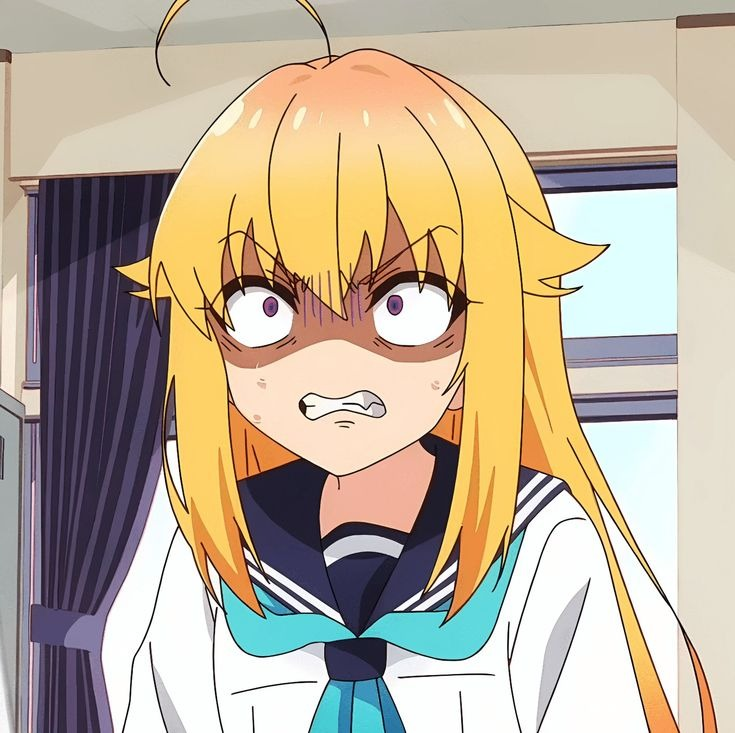
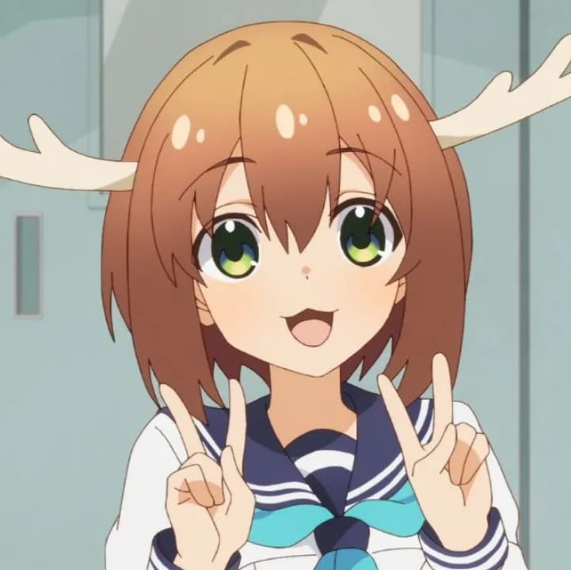
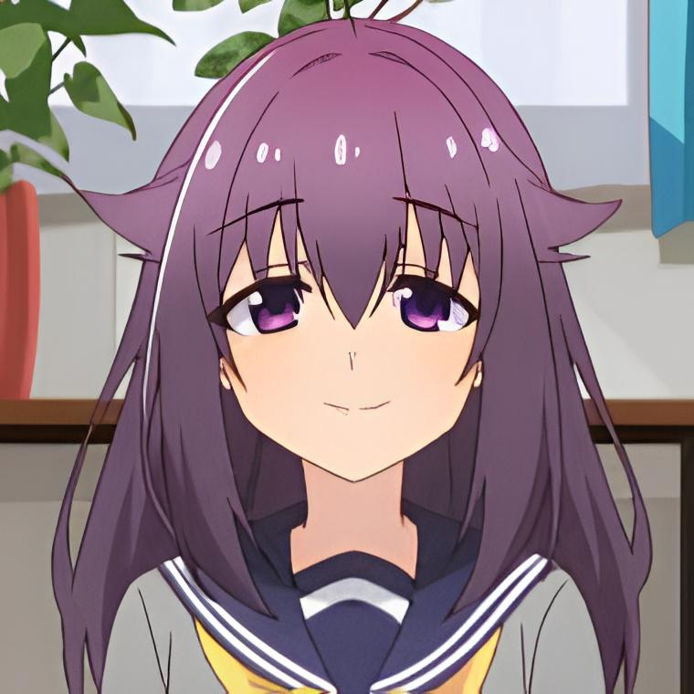
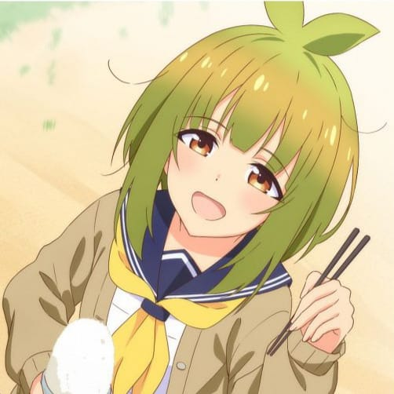
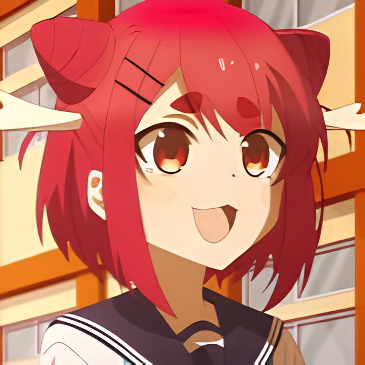
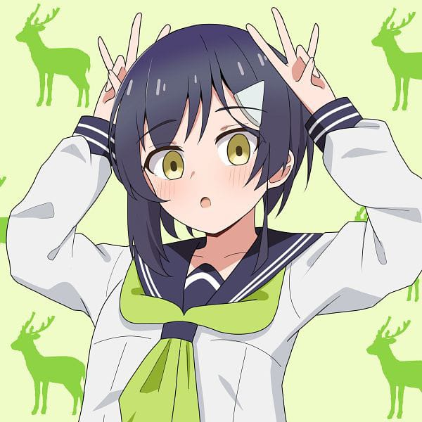

Review
agosto 26, 2024
Por que Shikanoko Nokonoko Koshitantan é a Comédia Mais Louca de 2024?
Confira esse review de Shikanoko Nokonoko Koshitantan, a comédia mais louca de 2024, e descubra por que esse anime vai te fazer rir sem parar!
Olá!!! Tudo bem? Seja bem vindo, pode me chamar de Diplu, hoje vou falar um pouco sobre o primeiro episódio de Shikanoko Nokonoko Koshitantan(O anime da menina veado), talvez o melhor anime de comédia de 2024, na minha opinião.
Se você ainda não conhece, Shikanoko Nokonoko Koshitantan é um anime de comédia japonesa lançado em julho de 2024. A história segue Koshi, uma jovem estudante exemplar com um passado obscuro, e Noko, uma garota veado com poderes sobre-humanos, que é a única que conhece o segredo que Koshi tenta desesperadamente esconder.
O anime estourou nas redes sociais pela sua abertura(eles fizeram uma versão de 1h), e logo após surpreendeu com sua qualidade.
O que faz Shikanoko tão engraçado?
A obra aposta em um humor absurdamente surreal, que poderia ser descrito como único, onde situações bizarras são tratadas com a maior naturalidade pelos personagens. Por exemplo, quando a Noko tenta entrar na escola e simplesmente quebra a parede com seus chifres, o absurdo da situação é elevado pela reação indiferente dos outros alunos ao serem acertados por destroços(a professora simplesmente continua dando aula… com cacos de VIDRO na cabeça).

Essa combinação de eventos inusitados com a falta de reação dos personagens é o que torna o humor tão eficaz e imprevisível. Essa abordagem cria um estilo único para o anime(até demais), tornando altamente reconhecível suas cenas.
Algo que também o torna reconhecível é sua animação(que é incrível), suas cenas são claramente bem animadas(houve um esforço e capricho imenso :D), sendo um grande atrativo, se adaptando ao humor mudando de estilo constantemente, mantendo sua qualidade e por fim contribuindo para a harmonia entre animação e roteiro.
Personagens
Responsáveis por tornar esse anime icônico, temos diversas personagens já apresentadas com personalidades extremamente distintas, algumas delas são:
Koshitan(Torako Koshi)
A protagonista(injustiçada), como já havia dito ela esconde seu passado como delinquente, inspirado em mangás shonen(palavras da Koshi), dona do clube de veados. Um traço interessante de sua personalidade é seu sadismo por decorar o clube dos veados.
Nokotan(Noko)
Segunda protagonista, também já foi citada antes uma garota veado com poderes sobre-humanos, veado do clube de veados(esquisitona), tudo dela é inesperado, como no primeiro episódio ela descobre que Koshi é virgem.
Anko Koshi
Irmã mais nova(complexada) da Koshitan, ela entrou no clube de veados para competir com Nokotan pela atenção da Koshitan(ela parece uma ninja), o que gera diversas cenas de humor.
Meme Bashime
Segunda veado do clube de veados(a jornada para se tornar uma veado é longa…), seu sonho é plantar arroz, uma piada recorrente, já que sempre está, ou comendo, ou fazendo arroz.
Neko Nekoyamada
Assim como seu nome já demonstra(Neko significa gato em japonês), ela foi inspirada em gatos, sendo uma rival(não assumida) de Koshi, ela tenta fazer de tudo para acabar com o clube de veados, e tomar a presidência do conselho estudantil de Koshi.
Chiharu Tsubameya
Á primeira vista ela aparenta ser uma pessoa durona e descolada, ignorando e destratando Koshi, mas futuramente revela uma admiração secreta por noko.
Compensa assistir Shikanoko?
Se você está procurando uma boa comédia(um anime com um humor absurdo), cheio de referencias, Shikanoko te entrega tudo isso e um pouco mais, sendo especialmente engraçado, bem feita e produzido, e aí te convenci a dar uma chance pra Shikanoko?
Obrigado pela sua atenção :D, espero que tenha gostado, e se você gostou dessa review, não perca as próximas análises! [Review 1] vai te surpreender, e [Review 2] traz uma abordagem que você não pode perder.